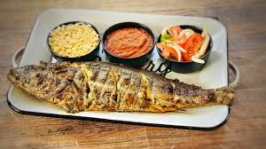

Recette Poisson Braise
Le ndole est un met traditionnel Camerounais originaire de la region de littoral crée par les Doualas
- Total:Approximative 45min
- Preparation:15min
- Cuisson:30min
Ingredients
- 6 maquereaux
- 1 branche de celeri
- 2 branches de Persil
- 5 pèbè
- 5 piments rouges
- 2 oignons découpés grossièrement
- 2 gousses d'ail
- 50 gde gingembre
- huile végétale
- 0.5 coupe poignée de djansang
- 2 cuillères à soupe de Jus de citron, cru
- 2 MAGGI Crevette 24(60x10g) CM
Instructions
- Etape 1: Ecraser l'oignon, le gingembre, l'ail, le poivre, le djansang et le pébé ; Divisez le mélange en deux parties et ajoutez à une partie le jus de citron et 2 cuillères à soupe d'huile; Badigeonnez vos poissons de ce mélange et laissez mariner 30 min.
- Etape 2: Ajouter le céleri, le persil et le MAGGI Crevette à l'autre partie des condiments; Laisser mijoter à feu doux pendant environ 5 min et ajouter un peu d'huile d'assaisonnement
- Etape 3: Écraser le piment et le deuxième oignon. Laisser mijoter aussi à feu doux environ 5 min et ajouter un peu d'huile d'assaisonnement et de sel.
- Etape 4: Préchauffer le barbecue et faites braiser votre poisson tout en le badigeonnant de la marinade de temps en temps. Faites ceci pendant environ 15 minutes pour chaque côté du poison; Servir ensuite avec la sauce barbecue et le piment et les plantains fris.
Nutrition
Le tableau ci dessous vous montre les valeurs nutritionnelles des differents aliments utilisés pour la cuisson de ce repas ainsi que les calories qu'ils apportent
| Calories | 277kcal |
| Glucides | 0g |
| Proteins | 20g |
| Lipides | 22g |